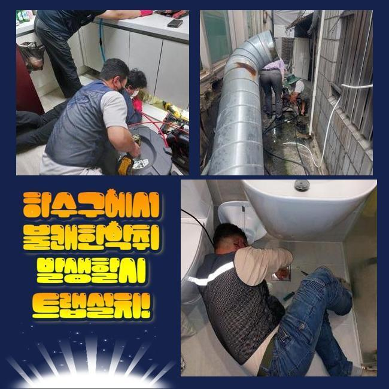
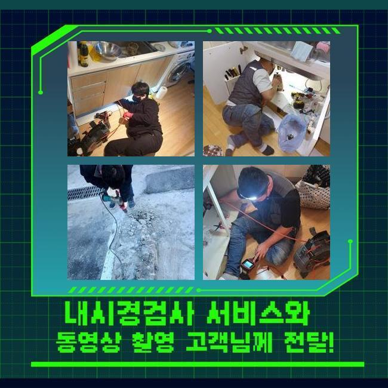
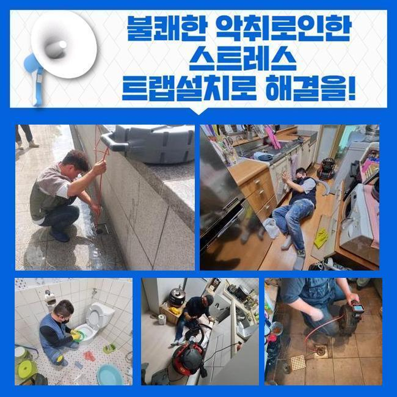
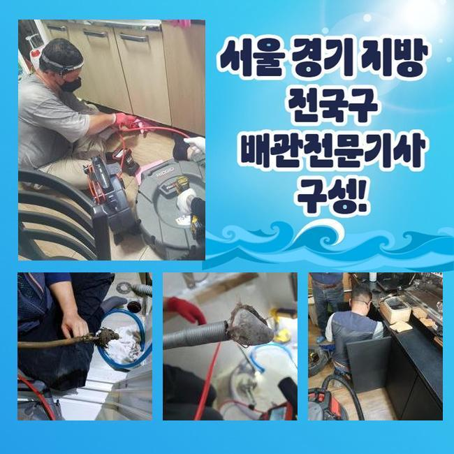
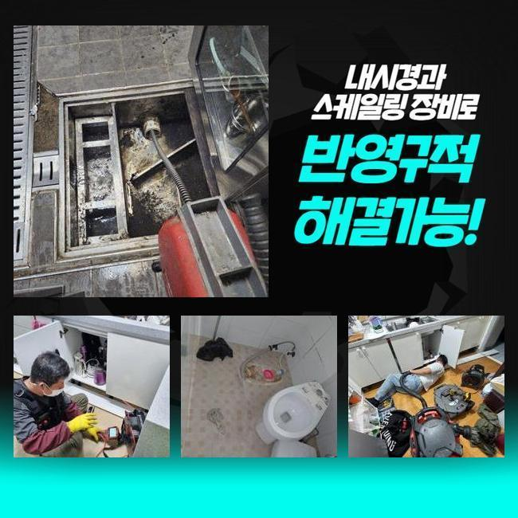
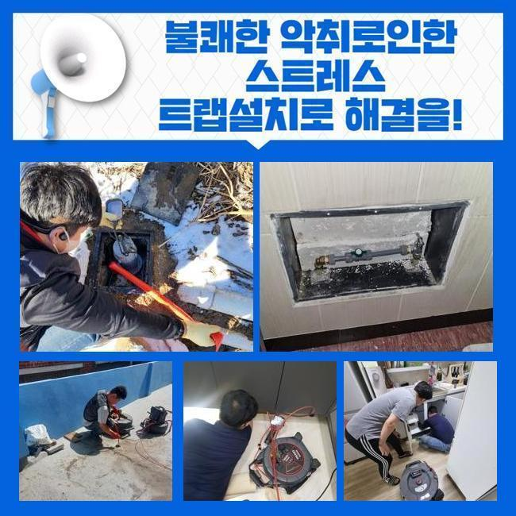

🏠 금정동하수구역류 궁내동 배수로뚫기 누수공사
용인 하수구막힘 전문 시공 후기

📋 작업 개요
- 위치: 용인
- 서비스 유형: 하수구막힘, 배관막힘, 맨홀막힘, 누수수리, 역류해결, 뚫는업체, 배관청소, 고압세척, 설비공사
- 작업 일시: 2025. 1. 15. 23:39
- 업체명: 하수구수사대 (010-5615-2118)
🔍 문제 상황
금정동하수구역류 궁내동 배수로뚫기 누수공사
하수관은 주택이나 가게같은 곳에 당연히 배치되는 시설이예요
하수를 배출하여 청결하고 깔끔한 일상을 유지하도록 도와주며 오염원들을 방지합니다
그러나 배수관이 막혀서 오수가 배출되지 않는 경우 누적된 불순물이 부패되어 지독한 악취가 생기며 하수구가 있는 곳에서 다양한 문제가 발생합니다
이로 인해 오수가 역으로 치솟거나 욕실을 사용하지 못하는 상황들이 발생하며 불편한 일들이 일어나게됩니다
이른 오전에 하수관 막힘문제들로 다급한 전화를 받아 서둘러 목적지로 출발했습니다
연립주택이라 일단 고객님의 집부터 방문했습니다
확인해본 결과로는 고객님이 가정에서 수도를 사용하실때마다 부동전의 배수구에서 물이 역방향으로 진행하는 현상들이 생겼습니다
화장실과 주방에서 물을 흘려보내면 하수관을 통해서 발생하는 악취등도 심했어요

🔎 원인 분석
💡 전문가 진단: 정밀 진단 장비를 사용하여 슬러지의 고착 여부를 판명하고 타격/세척 작업을 실시했습니다.
해당 문제들을 처리하기 위해서 내시경기를 활용해서 중심 맨홀의 배수구 내부상태를 확인했습니다
음식 기름등이 부패되며 하수라인에서 지독한 악취까지 나게하는 상황으로 집으로 오수가 올라오는 등의 일도 일어날 수도 있으므로 빠르게 작업을 시작했습니다
중심이 되는 본관의 중요성을 자세하게 말씀 드려보겠습니다
중심관의는 일상적으로 하는 모든 생활에서 배출되는 오염수를 내보내는 중심 역할을 합니다
만약에 메인 배수구가 막히게 된다면 내부에서부터 물이 넘치면서 부동전 방향의 배수구에서 역류사고가 발생합니다
이럴때는 내부쪽에서 배관만 뚫는다고 해도 문제점을 처리하는건 불가능하므로 메인이 되는 중심관을 해결하셔야 이후에 사용이 정상적으로 가능합니다
보편적으로 일어나는 사소한 일은 어렵지 않게 처리하실 수도 있겠지만 관경이 넓은 본관은 고압세척장치를 써서 단단하게 변형된 불순물을 세척합니다
고압세척기계의 노즐케이블은 하수라인의 끝부분까지 작업 할 수 있기때문에 신속정확하게 세척작업이 진행됩니다
메인의 배관에 고압세척기를 이용하여 슬러지와 다량의 오염물질을 청소했어요
세척이 끝난 후에 내시경기를 사용하여 하수가 정상적으로 나오는지 체크했어요

🔧 작업 과정
사례자께서 모니터 화면을 직접 보시면서 배수관이 완벽히 청소된 것까지 확인하시고 난 후에 마무리를 맡기셨습니다
두번째 현장지에 도착하여 고장난 하수설비를 수리하였습니다
이번에는 세탁기가 있는 베란다와 화장실에서 하수가 역류하는 상황으로 불순물이 함께 노출되며 고약한 냄새를 풍기는 상태였습니다
이런 경우엔 베란다의 배수구를 통해서 하수관의 청소를 시작하는게 일반적이나 이번에는 작업이 쉽지 않은 트랩 구조로 상황이 여의치 않았습니다
P트랩같은 경우 냄새나 벌레의 침입을 방지하는데 유용하지만 구조적인 특성상 침전물이 쉽게 쌓여서 배관의 막힘을 발생시키는 이유가 되기도 해요
이러한 경우엔 고압세척기 이용이 불가능한 구조인 확률이 높습니다
노즐의 투입이 힘들기때문에 사례자님께 추가적인 비용등을 발생시키지 않고자 효율적인 작업방법을 찾아내야 했습니다
P트랩이 가진 특징으로 인하여 고압세척기계를 투입하면 배관이 손상될 수 있는 위험도가 높아서 플랙스 샤프트기를 이용해 문제점을 해결하기로 했어요
샤프트장비는 강한 회전으로 배수라인 안쪽에 누적된 불순물을 세척합니다
샤프트기는 배수관을 안전하게 보호하면서도 끝부분까지 청소할 수 있어요
기기의 끝부분에 부드러운 장비를 결합하고 찌꺼기를 긁어낼 수 있으며 곡선 부분에도 투입 할 수 있어서 배수관 안쪽에 누적되어 있는 불순물도 완전하게 제거합니다
몇 번의 작업만으로는 완전하게 세척되지 않았으므로 샤프트장비를 계속해서 이용하여 딱딱하게 변형된 침전물을 청소했어요
세척이 끝난 후에 통수작업이 제대로 흐르고있는지 점검을 완료했고 의뢰인께서도 역류현상이 일어났던 배수관을 직접 확인하시고 만족하시며 감사인사를 전하셨습니다
배수구가 막힌 경우에 원인을 제거하지 않고 계속 사용하신다면 하수관에 적재된 노폐물이 썩게되면서 고약한 냄새가 생겨나게되며 통수가 정상적으로 이루어질 수 없어서 오염수가 역방향으로 진행하게 되는 문제들이 발생합니다
하수관 내부에서 압력이 지속적으로 발생하게 되면 배수라인 내부에 피해가 계속 진행돼 누수와 같은 상황으로 발전되며 고객님의 비용적인 부담감 상승과 많은 시간까지 들여야합니다


✅ 작업 완료
배수구와 관련된 문제점이 발생하셨다면 전문진에게 도움을 요청하셔서 빠르게 조치를 취하시는게 가장 좋습니다
이번 현장에선 하수라인의 막힘 문제를 해결하였고 배관에서 올라오는 냄새로 인한 제거까지 완료했어요
고객분의 일상 속 습관을 고치실 것을 안내드리고 하수설비의 이상이 재발하는 일이 없도록 검수를 마쳤습니다
하수관 관련된 문제로 편하게 저희 업체에게 문의 해주시면 빠르게 처리 해드리겠습니다



⚠️ 베란다 누수 및 방수 관리 방법
- ✅ 비가 많이 올 때 창틀 주변이나 아래층 천장에 얼룩이 생기는지 정기적으로 확인해 보세요.
- ✅ 우수관 주변 실리콘 마감이 들뜨거나 깨진 틈새가 있는지 손상 여부를 수시로 체크하세요.
- ✅ 베란다 바닥 타일의 줄눈(메지)이 소실되면 그 틈으로 물이 침투하여 누수가 유발됩니다.
- ✅ 누수 의심 증상 발견 시 방치하면 아래층 손실이 커지므로 즉시 전문가의 진단을 받으십시오.
💡 핵심 정리
- 확실한 장비 작업(내시경 점검 및 샤프트 스케일링)으로 원인을 뿌리 뽑습니다.
- 작업 후 1년 이내에 동일한 부위 재발 시 100% 무상 A/S 서비스를 보장합니다.
- 서울 · 경기 · 인천 전 지역에 24시간 언제든 긴급 출동할 수 있도록 항시 대기 중입니다.
❓ 자주 묻는 질문 (FAQ)
🚨 용인 하수구막힘 문제로 고민이신가요?
정확한 원인 진단과 확실한 시공으로 재발 없는 해결을 약속드립니다.
24시간 긴급 출동 | 서울 · 경기 · 인천 전지역 | 1년 내 재발 시 무상 A/S